Word member van Dille & Kamille

- Als eerste een kijkje in onze seizoenscollectie
- Uitnodiging voor onze exclusieve memberavond
- Leuke win-acties!
Smaken verschillen
veiligheidwaarschuwing over onze Plantenirrigator Vogel (00041764)!
Meer informatie >Herfst bij Dille & Kamille
7,97
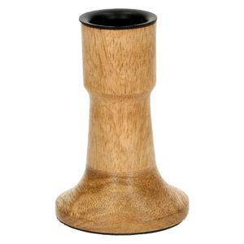29,95

19,95
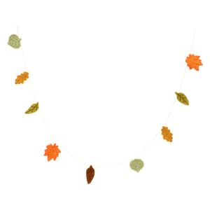5,95
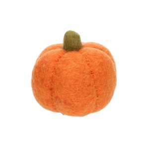16,95
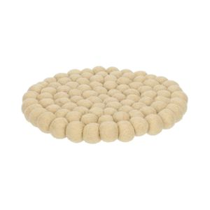16,95
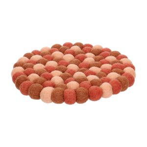6,96
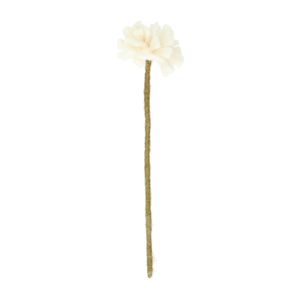6,96
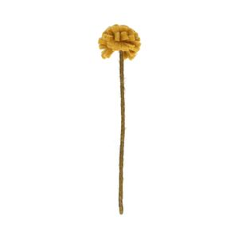6,96
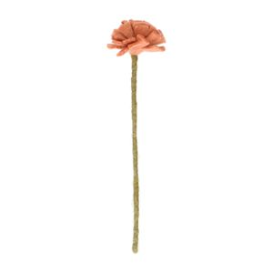6,96
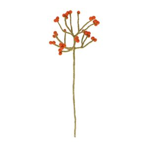6,96
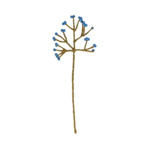6,96
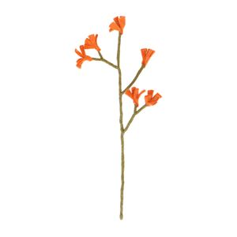6,95
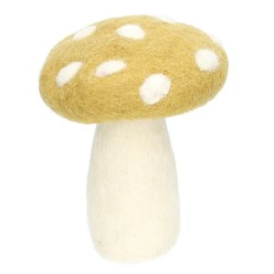Bekijk ons assortiment met tijdloze artikelen van natuurlijke materialen voor huis en tuin. Doe inspiratie in onze blogs en recepten, zoek een bijzonder cadeau uit of trakteer jezelf op een mooi tafelkleed, fijne zeep of handig keukengerei. Bekijk ook onze nieuwe seizoenscollectie voor de zomer.
Pompoenen van vilt, een geurkaars en plaid voor extra warmte in huis, paddenstoelenstoof, een goed gevulde hapjesplank en volop peren… Het is herfst bij Dille!
Met vilten bloemen, droogbloemen en kippengaas maak je heel eenvoudig een bloemenkrans met een natuurlijke uitstraling. Een echte blikvanger, waar je lang plezier van hebt!
Een kruidig cakeje, zoete peer en zelfgemaakte espressosaus: deze kardemomcakejes met een hele, gepocheerde peer zijn een kunstwerk om te zien!

Voor vragen, tips of hulp kun je contact opnemen met onze klantenservice. Of bekijk hier het antwoord op de meestgestelde vragen.
Online Klantenservice